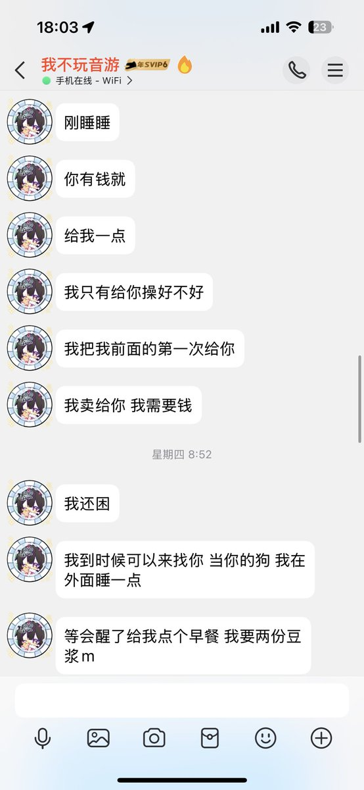

小雨
@xiaoyuzhiyao
是的我是母狗 我没有说任何不承认的事实 这张截图那时候我没有任何的对象 我只是希望
1 你能客观一点 不要把自己摘出来太清 我的截图只是对于你断章取义的补充 我的罪行我全部承认
2 我希望你别拘泥于这些事情 我希望你能去当正常女孩子找自己的幸福
3 我希望对于我贱种这件事 影响不要到我身边的人 他们无辜

丸丸
@wanwanblaster
@xiaoyuzhiyao 你要给大家看乐子的 https://t.co/7DOanTSZoK